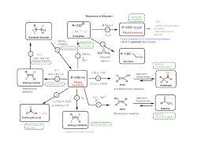
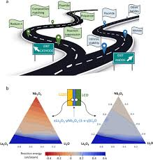

Chemistry is the branch of science that studies the **composition, structure, properties, and reactions of matter**, particularly at the atomic and molecular levels. It explores how different elements and compounds interact, form bonds, and undergo **chemical reactions**. Chemistry is often referred to as the **central science** because it connects and overlaps with various scientific disciplines, including biology, physics, medicine, and environmental science.
The study involves understanding the behavior of atoms and molecules. This includes learning about the **periodic table**, which organizes elements based on their properties. Chemical reactions are governed by the principles of **thermodynamics, kinetics, and equilibrium**.
Chemistry is divided into subfields such as **organic chemistry** (carbon compounds), **inorganic chemistry** (metals, minerals), **physical chemistry** (physics principles), and **analytical chemistry** (detection and quantification). The field is fundamental to many industries, playing a crucial role in developing new materials, drugs, and sustainable energy solutions.
An extended **reaction stoichiometry roadmap** is a diagram which shows the steps needed to convert between units of reactant and units of product in a reaction.

Simply put, a roadmap is a strategic planning technique that places a project's goals and major deliverables (tasks, milestones) on a timeline, all grouped in a single visual representation or graphic. This is essential for tackling complex chemical research or study plans.